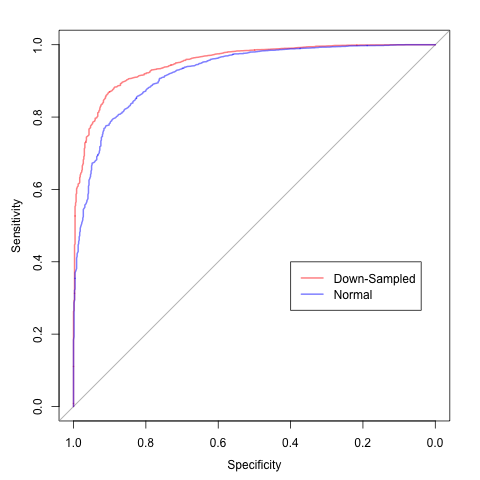

Down-Sampling Using Random Forests
We discuss dealing with large class imbalances in Chapter 16. One approach is to sample the training set to coerce a more balanced class distribution. We discuss
- down-sampling: sample the majority class to make their frequencies closer to the rarest class.
- up-sampling: the minority class is resampled to increase the corresponding frequencies
- hybrid approaches: some methodologies do a little of both and possibly impute synthetic data for the minority class. One such example is the SMOTE procedure.
Here is an image from the book that shows the results of sampling a simulated data set:

The down-side to down-sampling is that information in the majority classes is being thrown away and this situation becomes more acute as the class imbalance becomes more severe.
Random forest models have the ability to use down-sampling without data loss. Recall that random forests is a tree ensemble method. A large number of bootstrap samples are taken form the training data and a separate unpruned tree is created for each data set. This model contains another feature that randomly samples a subset of predictors at each split to encourage diversity of the resulting trees. When predicting a new sample, a prediction is produced by every tree in the forest and these results are combined to generate a single prediction for an individual sample.
Random forests (and bagging) use bootstrap sampling. This means that if there are n training set instances, the resulting sample will select n samples with replacement. As a consequence, some training set samples will be selected more than once.
To incorporate down-sampling, random forest can take a random sample of size c*nmin, where c is the number of classes and nmin is the number of samples in the minority class. Since we usually take a large number of samples (at least 1000) to create the random forest model, we get many looks at the data in the majority class. This can be very effective.
The R package for the book contains scripts to reproduce almost of the analyses in the text. We mistakenly left out the code to down-sample random forests. I’ll demonstrate it here with a simulated data set and then show code for the caravan policy data use din the chapter.
Let’s create simulated training and test sets using this method:

## Simulate data sets with a small event rate
set.seed(1)
training <- twoClassSim(500, intercept = -13)
testing <- twoClassSim(5000, intercept = -13)
table(training$Class)
##
## Class1 Class2
## 428 72
nmin <- sum(training$Class == "Class2")
nmin
## [1] 72Now we will train two random forest models: one using down-sampling and another with the standard sampling procedure. The area under the ROC curve will be used to quantify the effectiveness of each procedure for these data.
ctrl <- trainControl(method = "cv",
classProbs = TRUE,
summaryFunction = twoClassSummary)
set.seed(2)
rfDownsampled <- train(Class ~ ., data = training,
method = "rf",
ntree = 1500,
tuneLength = 5,
metric = "ROC",
trControl = ctrl,
## Tell randomForest to sample by strata. Here,
## that means within each class
strata = training$Class,
## Now specify that the number of samples selected
## within each class should be the same
sampsize = rep(nmin, 2))
set.seed(2)
rfUnbalanced <- train(Class ~ ., data = training,
method = "rf",
ntree = 1500,
tuneLength = 5,
metric = "ROC",
trControl = ctrl)Now we can compute the test set ROC curves for both procedures:
downProbs <- predict(rfDownsampled, testing, type = "prob")[,1]
downsampledROC <- roc(response = testing$Class,
predictor = downProbs,
levels = rev(levels(testing$Class)))
unbalProbs <- predict(rfUnbalanced, testing, type = "prob")[,1]
unbalROC <- roc(response = testing$Class,
predictor = unbalProbs,
levels = rev(levels(testing$Class)))And finally, we can plot the curves and determine the area under each curve:
plot(downsampledROC, col = rgb(1, 0, 0, .5), lwd = 2)
## Call:
## roc.default(response = testing$Class, predictor = downProbs,
## levels = rev(levels(testing$Class)))
##
## Data: downProbs in 701 controls (testing$Class Class2) < 4299 cases (testing$Class Class1).
## Area under the curve: 0.9503
##
plot(unbalROC, col = rgb(0, 0, 1, .5), lwd = 2, add = TRUE)
## Call:
## roc.default(response = testing$Class, predictor = unbalProbs, levels = rev(levels(testing$Class)))
##
## Data: unbalProbs in 701 controls (testing$Class Class2) < 4299 cases (testing$Class Class1).
## Area under the curve: 0.9242
legend(.4, .4,
c("Down-Sampled", "Normal"),
lwd = rep(2, 1),
col = c(rgb(1, 0, 0, .5), rgb(0, 0, 1, .5)))This demonstrates an improvement using the alternative sampling procedure.
One last note about this analysis. The cross-validation procedure used to tune the down-sampled random forest model is likely to give biased results. If a single down-sampled data set is fed to the cross-validation procedure, the resampled performance estimates will probably be optimistic (since the unbalance was not present). In the analysis shown here, the resampled area under the ROC curve was overly pessimistic:
getTrainPerf(rfDownsampled)
## TrainROC TrainSens TrainSpec method
## 1 0.8984348 1 0.07142857 rf
auc(downsampledROC)
## Area under the curve: 0.9503For the caravan data in Chapter 16, this code can be used to fit the same model:
set.seed(1401)
rfDownInt <- train(CARAVAN ~ ., data = trainingInd,
method = "rf",
ntree = 1500,
tuneLength = 5,
strata = training$CARAVAN,
sampsize = rep(sum(training$CARAVAN == "insurance"), 2),
metric = "ROC",
trControl = ctrl)
evalResults$RFdownInt <- predict(rfDownInt, evaluationInd, type = "prob")[,1]
testResults$RFdownInt <- predict(rfDownInt, testingInd, type = "prob")[,1]
rfDownIntRoc <- roc(evalResults$CARAVAN,
evalResults$RFdownInt,
levels = rev(levels(training$CARAVAN)))(This article was originally posted at http://appliedpredictivemodeling.com)